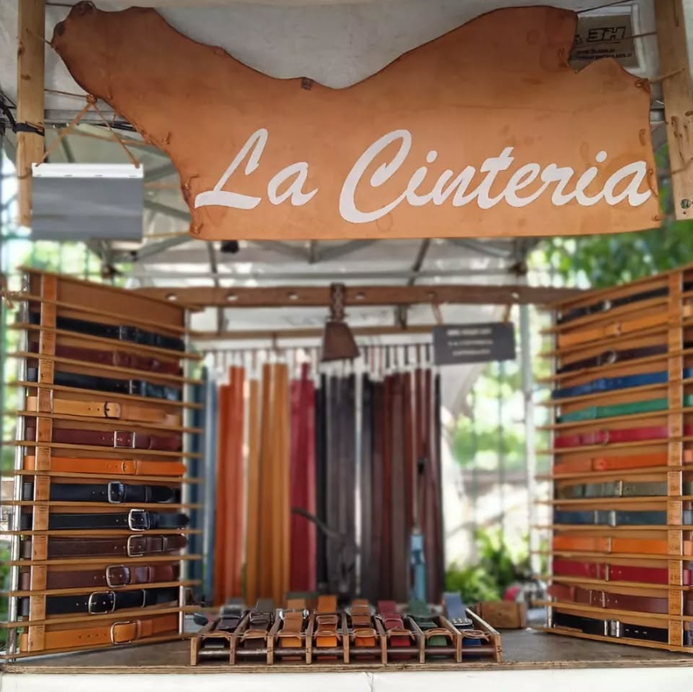
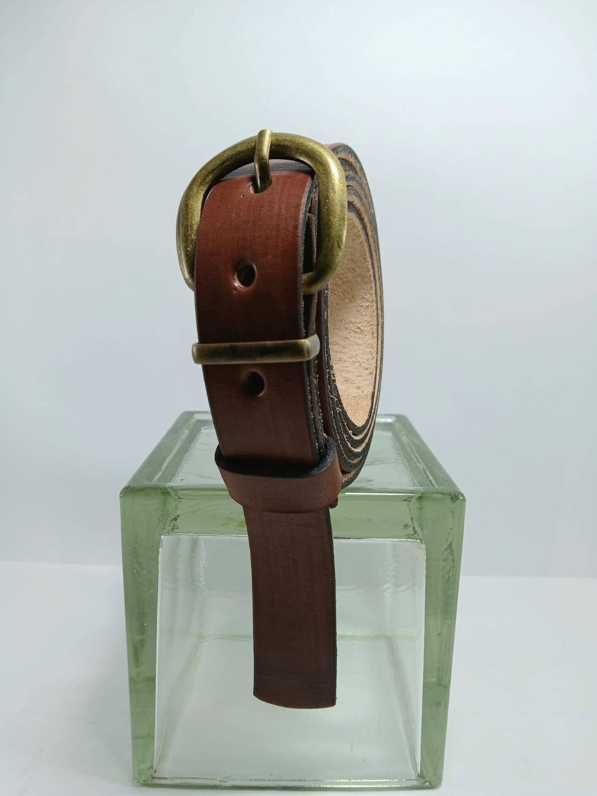
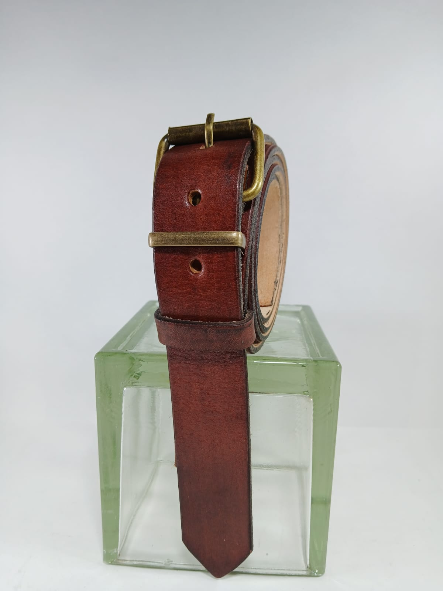
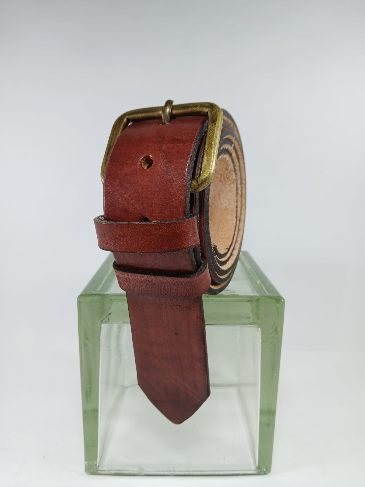
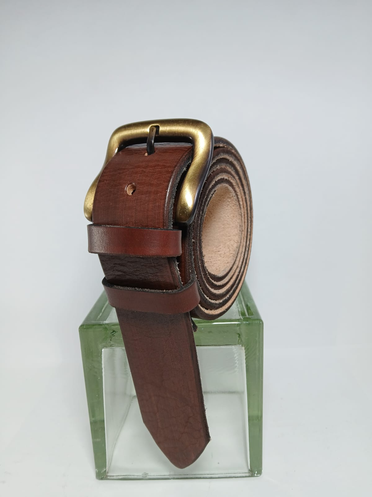
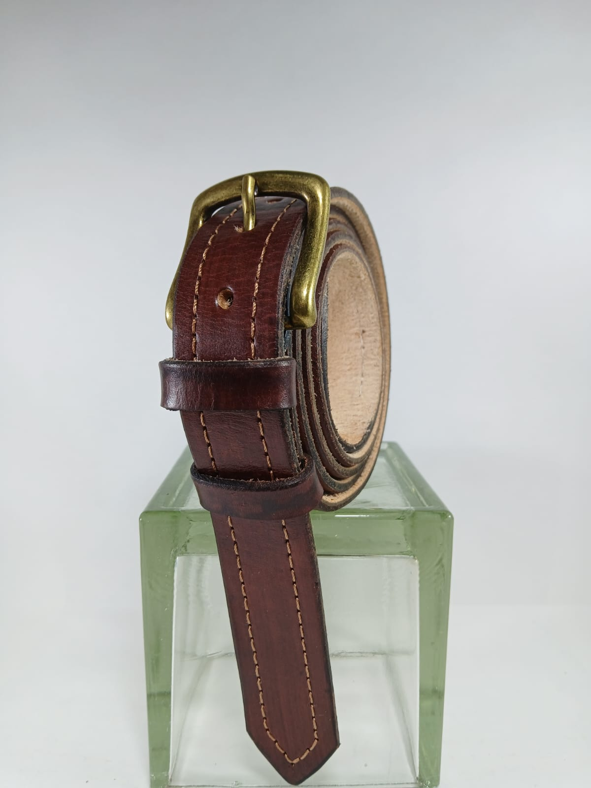
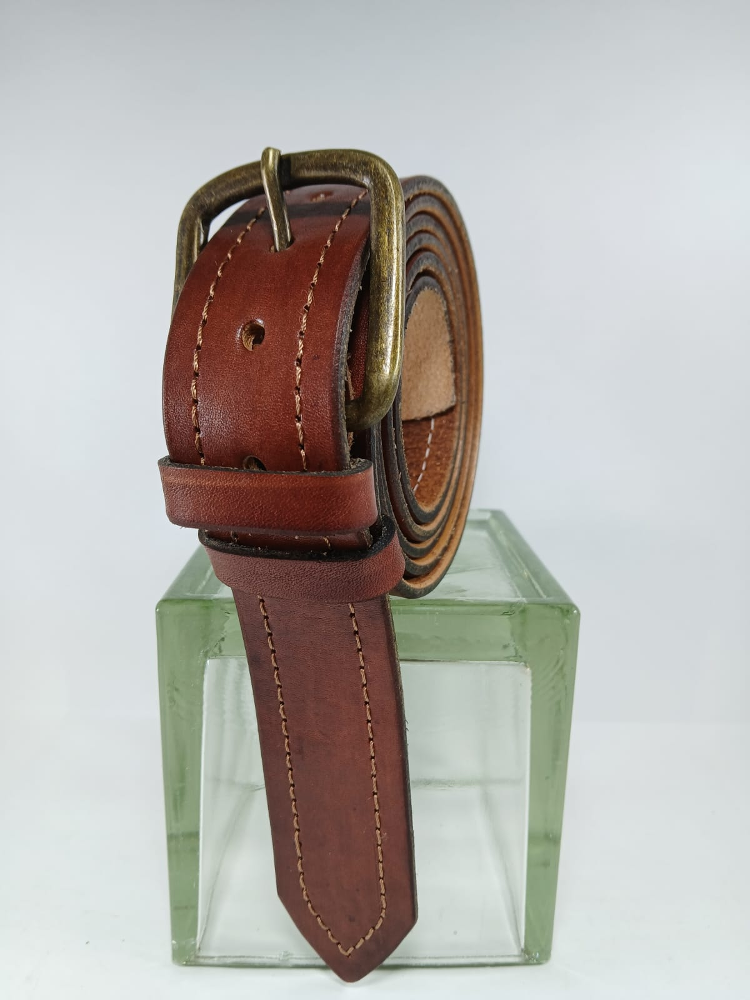
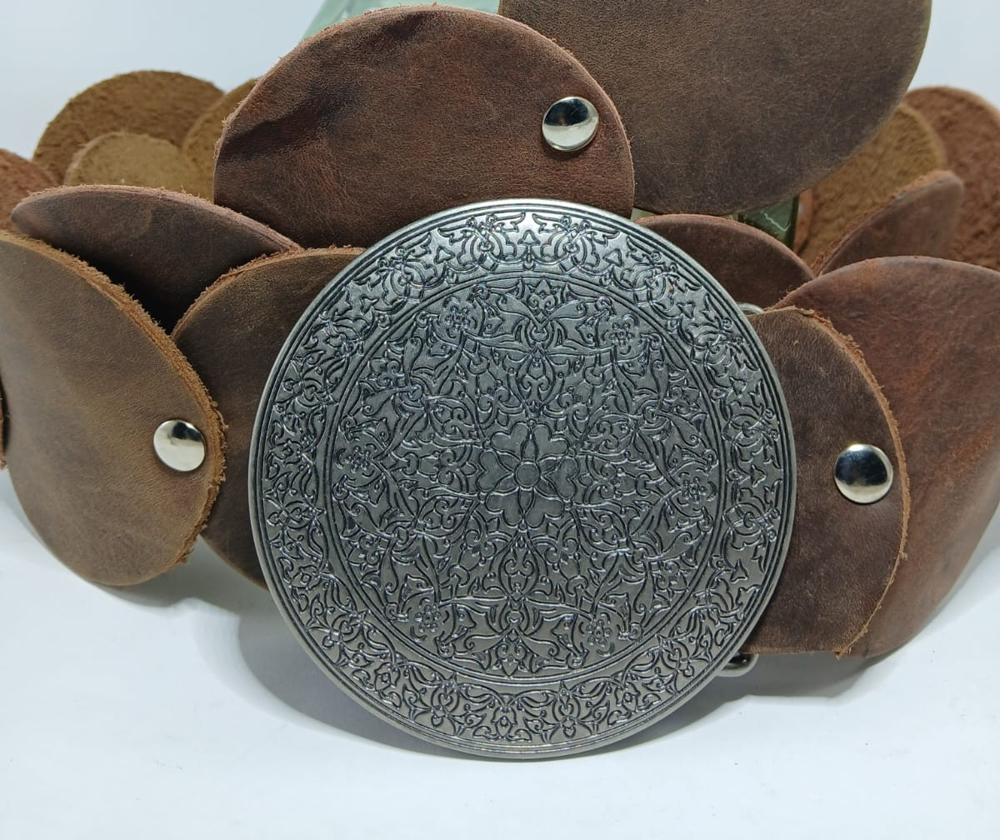

Hecho a mano
Cintos artesanales de cuero 100% vacuno, hechos a medida
Elegí el ancho, el color y la hebilla. Nosotros lo hacemos a tu talle.

- Cuero 100% vacunoMateriales nobles que duran años.
- Hecho a tu medidaNos pasás tu talle y lo hacemos justo.
- Pedido por WhatsAppSimple, directo y con atención personal.
Elegí tu modelo
Cada ancho viene en distintos colores, con hebilla bronce o plateada.

Liso
Paso 2.5 cm
Ver colores →

Liso
Paso 3 cm
Ver colores →

Liso
Paso 3.5 cm
Ver colores →

Liso
Paso 4 cm
Ver colores →

Cocido
Paso 3 cm
Ver colores →

Cocido
Paso 3.5 cm
Ver colores →

Especial
Cinto de círculos
Ver colores →